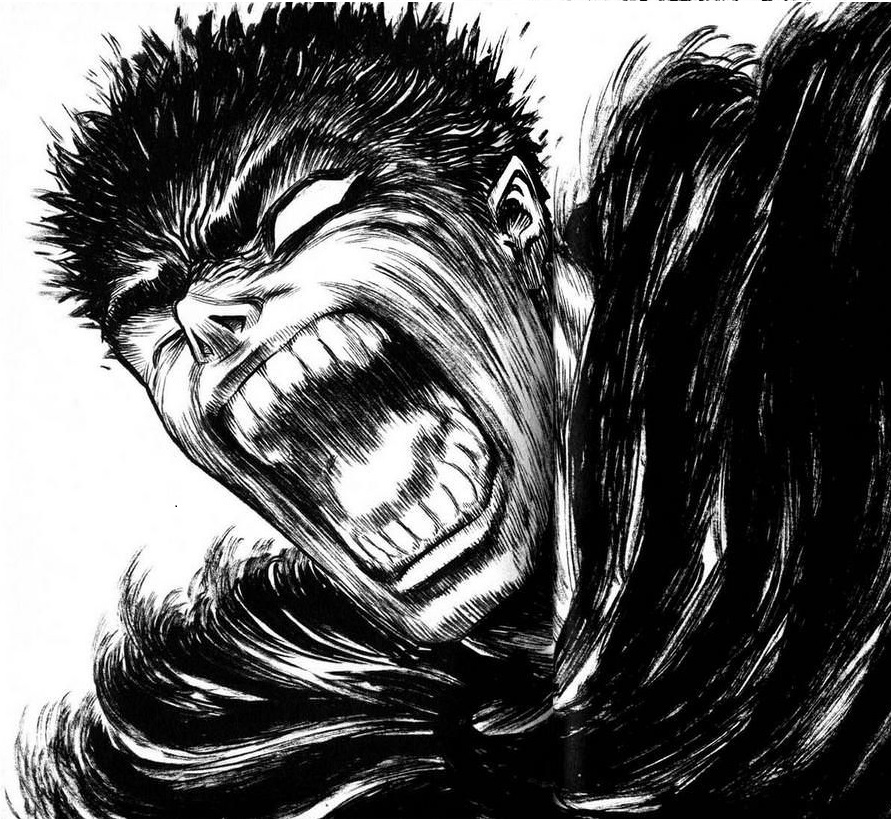
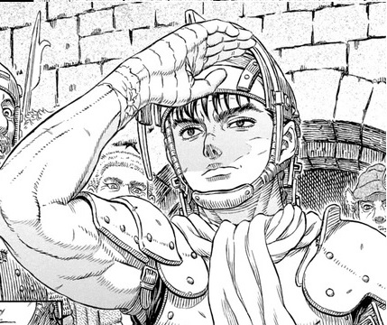
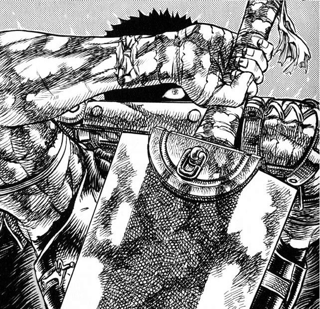
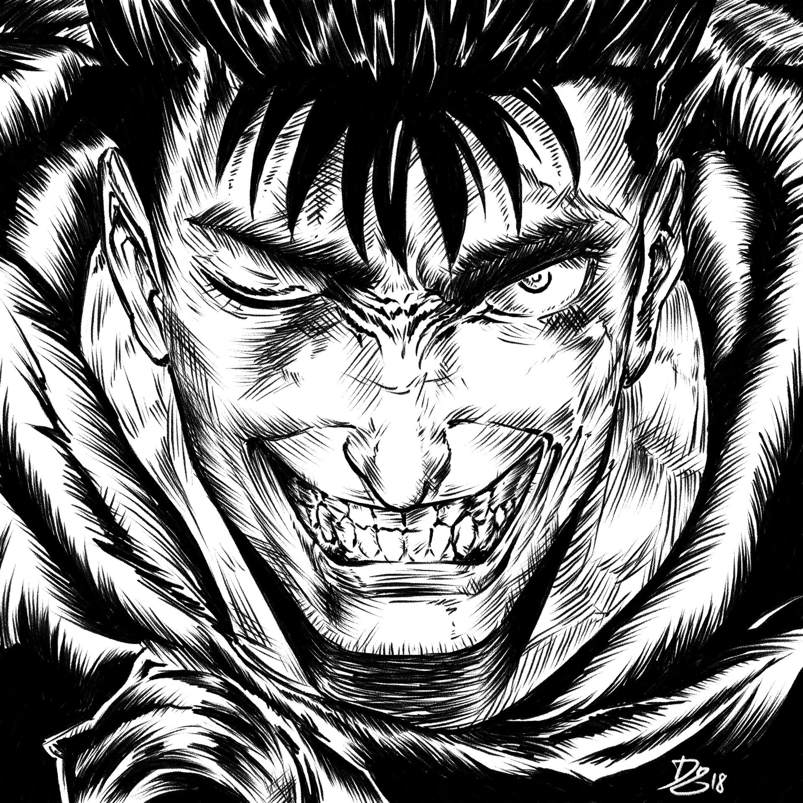
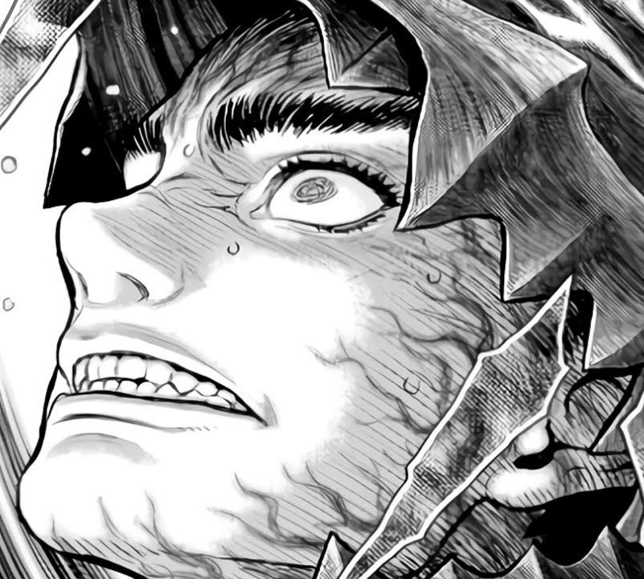
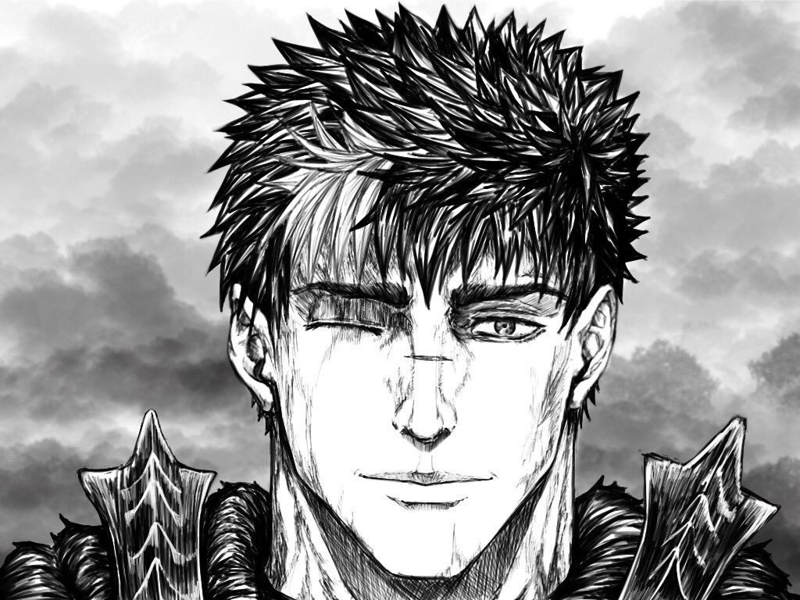
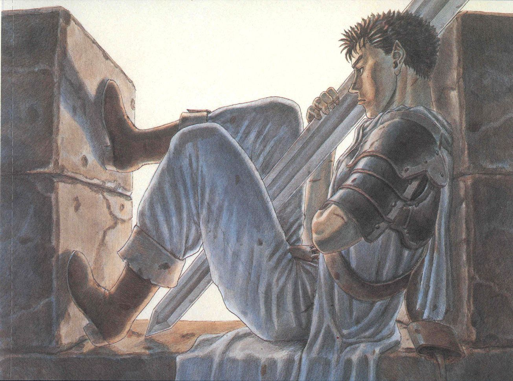
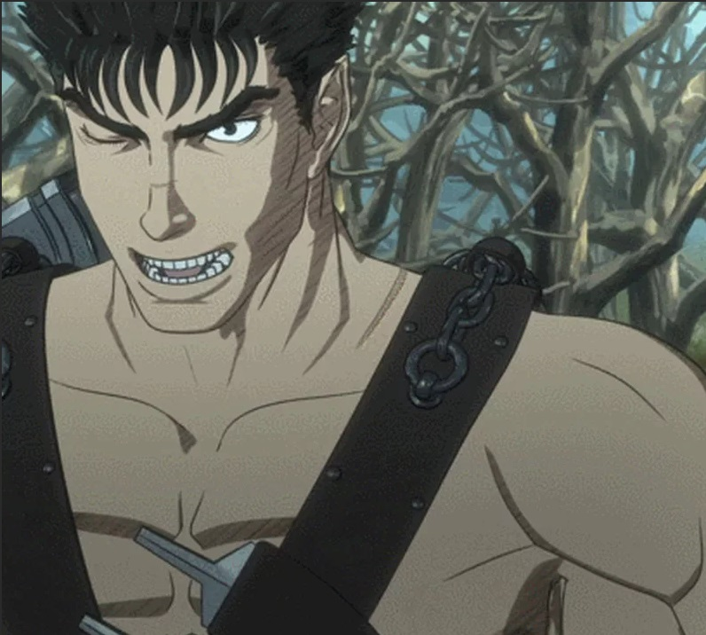

Козерог 23 декабря – 20 января

Водолей 21 января – 19 февраля

Рыбы 20 февраля – 20 марта

Овен 21 марта – 20 апреля

Телец 21 апреля – 21 мая

Близнецы 22 мая – 21 июняРак 22 июня – 22 июляЛев 23 июля – 21 августа

Дева 22 августа – 23 сентябряВесы 24 сентября – 23 октября

Скорпион 24 октября – 22 ноября

Стрелец 23 ноября – 22 декабря